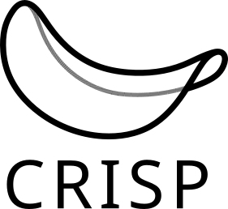
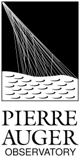

Research Projects
Detailed overview of my current and past research projects in theoretical astroparticle physics.

CRISP Package
CRISP is a Python package designed for efficient computation of Ultra-High-Energy Cosmic Ray (UHECR) propagation quantities using closed-form probability distribution functions. The package provides a fast and accurate alternative to traditional Monte Carlo simulations for both in-source and extragalactic propagation scenarios.
Key Features:- Closed-form solutions: Analytical probability distribution functions for rapid calculations
- Flexible scenarios: Applicable to both in-source and extragalactic propagation
- Computational efficiency: Significantly faster than traditional Monte Carlo methods
- Python-based: Easy integration with other simulation frameworks
CRPropa Development
CRPropa is a modular framework for simulating the propagation of ultra-high-energy cosmic rays, gamma-rays, and neutrinos through astrophysical environments. As a core developer, I contribute to extending its physics capabilities and computational efficiency.
My Contributions:- Implementation of advanced hadronic interaction models (EPOS-LHC, QGSJET-II, SIBYLL)
- Development of analytic stochastic interactions for improved performance
- Extended nuclear cross sections to include masses beyond iron
- Documentation, testing, and community support
MICRO Project
The MICRO project is a collaborative DFG-ANR (German-French) research initiative investigating the origins of Ultra-High Energy Cosmic Rays by using state-of-the-art methods in the field. The project focuses on bursting scenarios of UHECR sources by improving existing simulation tools, as well as combining experimental data and simulations to explain the observations and their connection with other messenger particles like gamma rays and neutrinos.
Research Objectives:- Hadronic interaction models: Implementing in CRPropa for source simulations
- Source simulations: Inclusion of temporal effects in source simulations of bursting sources
- Composition studies: Improved propagation tools to evolve UHECR mass composition from source to Earth
- Observatory uncertainties: Refined tools to quantify uncertainties and enhanced model comparison

Pierre Auger Collaboration
The Pierre Auger Observatory is the world's largest facility for studying UHECRs, located in Mendoza Province, Argentina. The observatory uses a hybrid detection technique combining surface detectors and fluorescence telescopes.
My Contributions: Phenomenoloy and multi-messenger studies, propagation composition studies with propagation models, temporal effects in the Galaxy using models of the Galactic Magnetic Field. Key Research Areas: Energy spectrum, mass composition, arrival direction anisotropies, multimessenger searches, source identification.⚛️ FLUKA & Flair
FLUKA is a widely used nuclear / particle physics Monte Carlo simulation package for a variety of applications. Flair is a advanced user interface to work with Fluka and assist simulation related tasks ranging from building complex geometries to perform advanced setups to visualisation. As a member of the FLUKA collaboration, I contributed to Fluka schools and became and advanced user. I performed simulations for neutron diffusion, proton-target collisions, radiation dose and radiation thermomechanical stress studies for ISOLDE. I also performed radiation studies for laser-matter interaction experiments to produce dose estimations and detector designs in ELI-Beamlines.
My Contributions:- Teaching on the 17th and 18th Fluka courses
- Implemented advanced geometries in Flair and performed simulations for the beam dump energy deposition (CERN-ACC-Note-2014-0040, CERN-ACC-Note-2014-0040) the and the target storage of HIE-ISOLDE
- Estimates of radiation dose and shielding requirements for laser-matter interactions experiments in ELI-Beamlines (Matter Radiat. Extremes 2, 149–176 (2017))
- Fluka simulations for the design of an X-ray spectrometer in ELI-Beamlines (Rev. Sci. Instrum. 89, 085118 (2018))